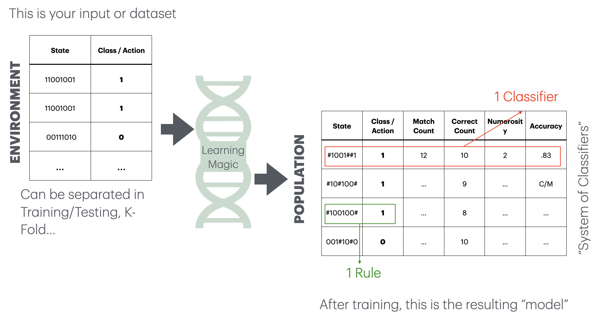
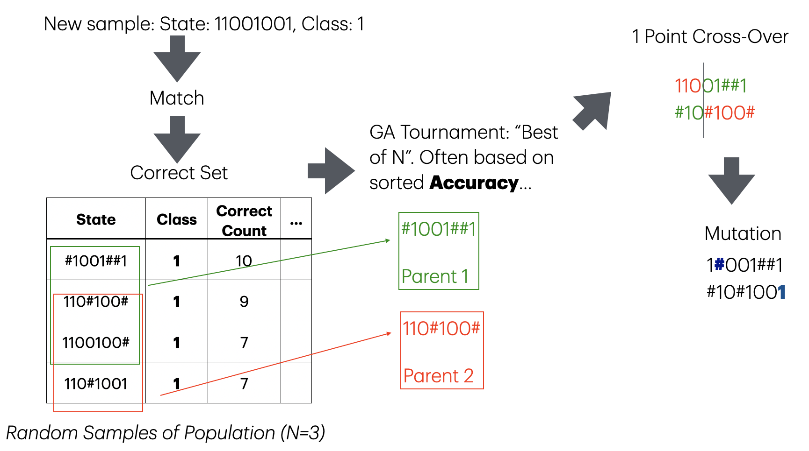
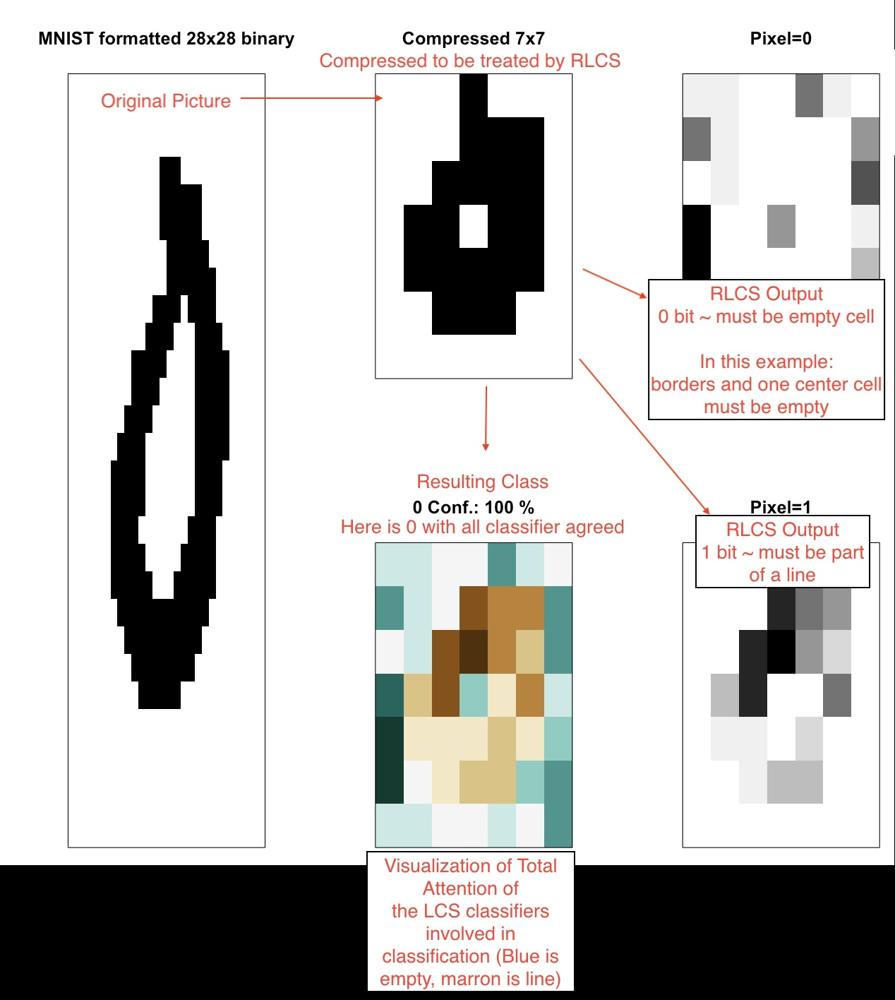
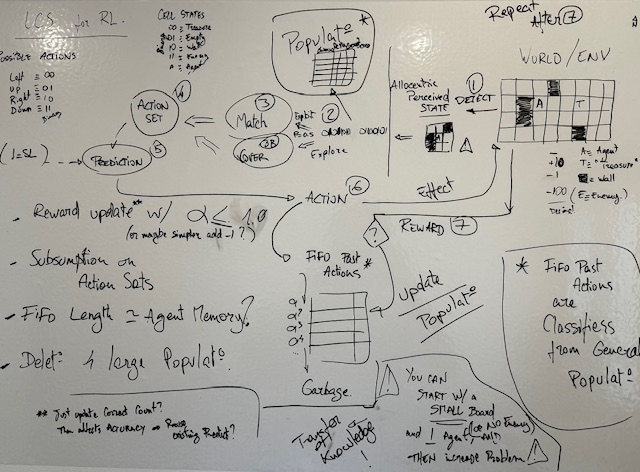

RLCS: An Introduction
Interpretable, Symbolic Machine Learning
An issue with “AI”: explainability
Let’s call it Machine Learning. As of today:
Mostly Neural networks
And mostly, that means it’s all black boxes
There are ways around that. (e.g. Trees and other “open book” algorithms…)
. . .
John H. Holland proposed an algorithm with the Cognitive System One program (1976). Later, people came up with variations… Today we focus on Michigan-style LCS.
Actually… That’s it. No time to dive deeper here.
Today, we’ll be discussing one such explainable Machine Learning algorithm.
A new R package

. . .
Have you ever found something that no one else has done?
I found such a thing last November 2024. But let’s go back for a minute.
A preview
Can you guess the “rule”?
> library(RLCS)
> demo_env1 <- rlcs_example_secret1()
> sample_of_rows <- sample(1:nrow(demo_env1), 10, replace=F)
> print(demo_env1[sample_of_rows,], row.names = F)
state class
01010 0
00111 0
11010 0
10001 1
00010 0
00100 1
10100 1
01111 0
01100 1
00001 1Did you guess right?
> demo_params <- RLCS_hyperparameters(n_epochs = 280, deletion_trigger = 40, deletion_threshold = 0.9)
> rlcs_model1 <- rlcs_train_sl(demo_env1, demo_params, NULL, F)
[1] "Epoch: 40 Progress Exposure: 1280 Classifiers Count: 14"
[1] "Epoch: 80 Progress Exposure: 2560 Classifiers Count: 8"
[1] "Epoch: 120 Progress Exposure: 3840 Classifiers Count: 2"
[1] "Epoch: 160 Progress Exposure: 5120 Classifiers Count: 2"
[1] "Epoch: 200 Progress Exposure: 6400 Classifiers Count: 2"
[1] "Epoch: 240 Progress Exposure: 7680 Classifiers Count: 2"
[1] "Epoch: 280 Progress Exposure: 8960 Classifiers Count: 2". . .
> print(rlcs_model1)
condition action match_count correct_count accuracy numerosity reward first_seen
1 ###1# 0 3560 3560 1 122 5 1843
2 ###0# 1 2770 2770 1 94 5 3421The model expresses: “Not bit 4”
The model: the Ternary Alphabet
A Population of Classifiers is produced.
This is how to read that output model:
Each classifier includes a rule that encodes a match for states that can be read as:
| 0 | No/False/not present |
| 1 | Yes/True/present |
| # | “Don’t care” |
Learning rules as model(s)
if A & NOT(B) then Class=X
if D then Class=Y
. . .
“Human-readable”, “interpretable”, good for:
Mitigating bias(es) (in training data, at least)
Increased trust (justifying decisions)
. . .
Learning about the data (data mining), better decisions, regulatory compliance, ethical/legal matters, possible adversarial attack robustness…
RLCS PRE-requisite
The input
Before we dive in:
Neural Networks accept numerical vectors for inputs.
Other algorithms accept factors, or mixed-input.
Well…
. . .
The RLCS package (specific/current implementation) expects binary strings for its input.
Binary input: Example

Binary input: Example
Rosetta Stone: 16 values, 4-bits, “double-quartiles” w/ Gray-binary encoding, per variable:
> head(iris, n=3)
Sepal.Length Sepal.Width Petal.Length Petal.Width Species
1 5.1 3.5 1.4 0.2 setosa
2 4.9 3.0 1.4 0.2 setosa
3 4.7 3.2 1.3 0.2 setosa
> rlcs_iris <- rlcs_rosetta_stone(iris, class_col=5) ## NOT part of LCS
> head(rlcs_iris$model, n=3)
rlcs_Sepal.Length rlcs_Sepal.Width rlcs_Petal.Length rlcs_Petal.Width class state
1 0010 1111 0011 0010 setosa 0010111100110010
2 0011 0101 0011 0010 setosa 0011010100110010
3 0000 1101 0000 0010 setosa 0000110100000010Note: with some data loss :S
Interlude: Get the package
Download and install RLCS
To get the package from GitHub:
library(devtools)
install_github("kaizen-R/RLCS")Run your first tests of RLCS
library(RLCS)
demo_params <- RLCS_hyperparameters(n_epochs = 400, deletion_trigger = 40, deletion_threshold = 0.9)
demo_env2 <- rlcs_example_secret2()
print(demo_env2, row.names = F)
rlcs_model2 <- rlcs_train_sl(demo_env2, demo_params, NULL, F)
print(rlcs_model2)
plot(rlcs_model2)Learning Classifier System: Algorithm Key Concepts
Keywords

Generating a rule
The key: “#” means “I don’t care”
Covering a state with a probability of “#” values means making a rule that matches the input state and class/action.
Something that could match other (partially) similar input:
> generate_cover_rule_for_unmatched_instance('010001', 0.2)
[1] "0#0001"
> generate_cover_rule_for_unmatched_instance('010001', 0.8)
[1] "##0###"You receive an instance of the environment (a binary string state and a class).
The class here is defined already.
2 - Matching
- When you see a new environment instance that does not match any rule in your population yet -> generate a new rule.
. . .
If one(+) rule(s) in your population matches your new instance state -> increase the match count of the corresponding classifier.
If one(+) rule(s) in your population matches your new instance state && class/action –> increase the correct count.
including their corresponding actions
Rule Discovery (GA)

mut_point <- which(runif(nchar(t_instance_state)) < mut_prob)Prediction
Imagine a new sample/instance, never seen before. (Test environment)
. . .
Prediction is about returning the match set for that new instance.
RLCS::get_match_set(sample_state, population_of_classifiers). . .
The prediction will be the majority (possibly weighted by numerosity, accuracy…) of the proposed class/action. That’s it!
It also means, this is natively an ensemble learning algorithm.
Demo Time
Iris
> print(t_end - t_start) ## Training Runtime.
Time difference of 13.13619 secs
> table(test_environment[, c("class", "predicted")])
predicted
class setosa versicolor virginica
setosa 13 0 0
versicolor 0 5 3
virginica 0 0 9Iris

Images Classifier
[1] "Accuracy: 0.98"
> table(test_mnist_bin01_49b[, c("class", "predicted")])
predicted
class 0 1 rlcs_no_match
0 1716 65 5
1 5 2008 0
>
> ## Training time on 800 samples:
> print(t_end - t_start)
Time difference of 1.937979 minsImages Classifier

Data Mining
Given that the rules are “expressive”, sometimes you can ask the LCS to find rules that appear in your data:
Not necessarily to classify future samples
To identify what is important for different classes of your data
. . .
REAL WORLD anecdote: inventory of 10K rows with 20 columns, each duly binary encoded. I learnt something about my inventory!
RL, TOO!

RL Video

Then again
This is all work in progress.
. . .
I plan to make it into a CRAN Package.
So: document more, write more tests, reorganize functions…
More Resources
THE BEST INTRO to the LCS Algorithm out-there (hands down!) (12’ video)
And for my first RevealJS Quarto, this blog entry (not mine)
Probably quite a few more, including the two in the first picture.